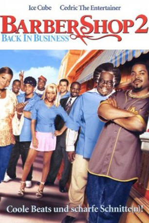

#5235 Barbershop 2 - Krass frisiert!
Alternativ: Barbershop 2: Back in Business
 
 IMDB-Wertung: 5.7 / 10
IMDB-Wertung: 5.7 / 10  Metascore: 0
Metascore: 0 
Als auf der anderen Straßenseite eine neue Filiale der landesweit führenden "Nappy Cutz"-Barbierkette eröffnet, droht dem Friseurgeschäfts von Calvin Palmer neues Unheil. Denn gerade hat er die Schlacht um die Besitzrechte seines väterlichen Betriebes mitten in Chicago erfolgreich gewonnen. Der neue Frisörladen lockt mit Dummpingpreisen. Das könnte der Untergang sein...
Jahr: 2004
Dauer: 106 Minuten
FSK: 6
Land: USA Studio: MGMTonspuren: DD2.0 - ,
Untertitel:
Auflösung: 1080p (1916x1036) Größe: 6092 MB
Genre: Drama, Komödie
Regisseur: Kevin Rodney Sullivan
Drehbuch: Gordon Buford
Soundtrack:
Darsteller:
 Ice Cube als Calvin
Ice Cube als Calvin Cedric the Entertainer als Eddie
Cedric the Entertainer als Eddie Sean Patrick Thomas als Jimmy
Sean Patrick Thomas als Jimmy Eve als Terri
Eve als Terri Troy Garity als Isaac
Troy Garity als Isaac Michael Ealy als Ricky
Michael Ealy als Ricky Leonard Earl Howze als Dinka
Leonard Earl Howze als Dinka Harry Lennix als Quentin Leroux
Harry Lennix als Quentin Leroux Robert Wisdom als Alderman Brown
Robert Wisdom als Alderman Brown- Jazsmin Lewis als Jennifer
- Carl Wright als Checkers Fred
 DeRay Davis als Hustle Guy
DeRay Davis als Hustle Guy Kenan Thompson als Kenard
Kenan Thompson als Kenard Queen Latifah als Gina
Queen Latifah als Gina- Garcelle Beauvais als Loretta
- Julanne Chidi Hill als Shawna
- Linara Washington als Keisha
 Marcia Wright als Joyce
Marcia Wright als Joyce- Javon Johnson als Calvin Palmer, Sr.
 Parvesh Cheena als Samir
Parvesh Cheena als Samir Tom Wright als Detective Williams
Tom Wright als Detective Williams- J. David Shanks als Customer Lamar
- David Newman als Customer Muhammad
- Max Arciniega als Customer
- Richard Pierre-Louis als Ricky's Customer
- Marvin Nelson als Terri's Customer
- Phillip Edward Van Lear als Mr. Diggs
- Chavez Ravine als Tanya
- Mike McNamara als Yuppie
 Keke Palmer als Gina's Niece
Keke Palmer als Gina's Niece- China L. Colston als Five-Kid Woman
- Avant als Dexter
- Tai'isha Davis als Nappy Cuts Video Female
- Susan Yoo als Japanese Woman
- Deon Cole als Customer Dante
 Janina Gavankar als Field Reporter
Janina Gavankar als Field Reporter- Charla Agers als Gina's Customer
- Talia Toms als Talia
- James Chisem als Alderman's Aide , uncredited
- Ryan Kitley als Assistant Detective , uncredited
- Brett Kloepfer als Construction Worker , uncredited
- David Leonard als Black Panther , uncredited
- Aaron Stigger als Customer , uncredited
- Gisla Stringer als Gina's Client , uncredited
- Sam Sanders als Mr. Johnson
- Jackie Taylor als Miss Emma
- Chris Tinsey als Customer Artis
- Brian P. Weddington als Customer Benny
- Jay Deep als Customer Horace
- Tamara Anderson als Customer Jiwanda
Datei: X:\3-Trilogie(A-F)\Barbershop\Barbershop 2 - Krass frisiert! (2004, FSK6, 1916x1036).mkv seit 03.01.2017
Festplatte: HD Collection-2(A-Z)-3(A-M)
 Alle Filme aus Gruppe '3-Trilogie(A-F)\Barbershop'
Alle Filme aus Gruppe '3-Trilogie(A-F)\Barbershop'